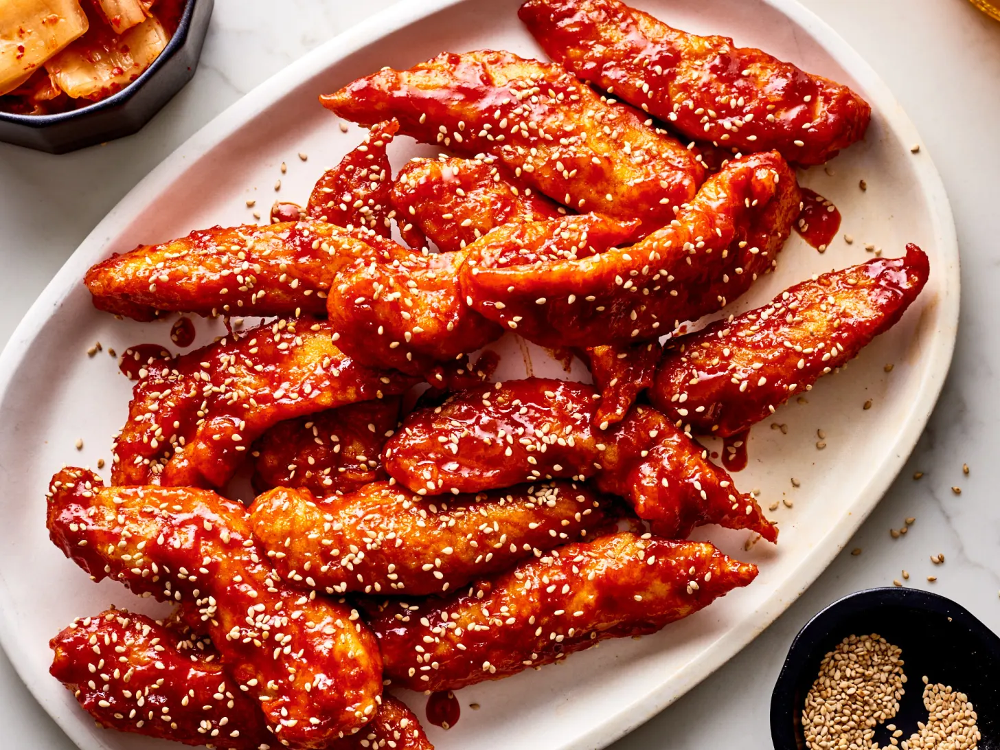

Korean Fried Chicken Recipe

Korean Fried Chicken is crunchy, juicy, coated in a sweet and spicy gochujang sauce that is out of this world! It’s one of the best ways to prepare and eat fried chicken and the secret to a restaurant quality Korean Fried Chicken is in the double-frying method!
Ingredient List
Marinade:
- Chicken tenders
- 1/2 yellow onion, grated
- 4 cloves garlic, minced
- 1 teaspoon fine salt
- 1/2teaspoon freshly ground black pepper
Other:
- 4 cups oil for frying, or as needed
Batter:
- 3/4 cup cornstarch
- 1/2 cup self-rising flour
- 1 teaspoon white sugar
- 1/2 teaspoon ground black pepper
- 1/4teaspoon salt
- 1 cup very cold water, or as needed
Directions
- Make marinade: Stir together chicken, onion, garlic, salt, and pepper in a medium bowl until chicken is coated. Cover the bowl with plastic wrap and refrigerate, 4 hours to overnight.
- Heat oil in a deep fryer or large saucepan to 340 degrees F (171 degrees C).
- While oil is heating, make the batter: Whisk cornstarch, flour, sugar, pepper, and salt together in a large bowl. Gradually whisk in cold water until mixture resembles a smooth batter. Use tongs to remove chicken from marinade to batter; stir to coat chicken completely. Discard marinade.
- Working in batches, fry chicken in hot oil for 4 minutes. Transfer chicken to a cooling rack.
- Increase oil temperature to 375 degrees F (190 degrees C).
- Working in batches, fry chicken again in hot oil until golden brown and crispy, 3 to 4 minutes. Transfer to a wire rack to drain.
- Enjoy!
Homepage